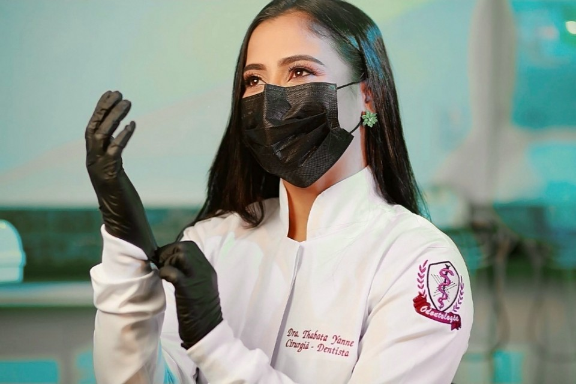

Conversa e avaliação
Escutamos o que incomoda você, seu histórico clínico e seus objetivos antes de realizar o exame detalhado dos dentes e da gengiva.
Dra. Thabata Yanne, cirurgiã-dentista em Imperatriz – MA. Facetas em resina, cirurgia oral menor, tratamento de canal e odontologia em geral.
No Centro de Imperatriz – MA, a Dra. Thabata Yanne dedica sua prática clínica a unir estética dental natural e preservação da saúde bucal, com atuação de destaque em facetas em resina.
Cada atendimento começa pela escuta atenta das suas queixas e expectativas. Seja no planejamento estético do sorriso, em procedimentos odontológicos gerais, em cirurgia oral menor ou no tratamento de canal (endodontia), cada etapa é explicada com clareza antes de iniciar.
As facetas em resina composta permitem harmonizar formato, proporção, pequenos espaços (diastemas) e bordas desgastadas por meio de camadas finas esculpidas diretamente sobre o esmalte dental, respeitando a identidade do seu rosto.
Selecione ou deslize pelas quatro frentes de atendimento realizadas pela Dra. Thabata Yanne em Imperatriz – MA:

Indicadas após avaliação criteriosa da estrutura dental e da gengiva, as facetas em resina corrigem assimetrias, diastemas e alterações de cor ou forma preservando a naturalidade do sorriso.
Agendar avaliação de facetasDo primeiro contato pelo WhatsApp ao acompanhamento pós-procedimento, cada etapa é conduzida com transparência para que você decida com tranquilidade:
Escutamos o que incomoda você, seu histórico clínico e seus objetivos antes de realizar o exame detalhado dos dentes e da gengiva.
Apresentamos com clareza as indicações reais para o seu caso, explicando alternativas, etapas necessárias e cuidados envolvidos.
As sessões são realizadas com atenção ao seu conforto, biossegurança rigorosa e acabamento minucioso em cada detalhe.
Após concluir o cuidado, orientamos a manutenção domiciliar e programamos as revisões periódicas para preservar a saúde do sorriso.
As facetas em resina são camadas finas de resina composta aplicadas e esculpidas diretamente sobre a superfície dos dentes. Elas permitem ajustar formato, contorno, pequenas frestas (diastemas) e alterações de cor, sempre com planejamento prévio individualizado.
A indicação depende obrigatoriamente de uma avaliação clínica presencial. Na consulta, a Dra. Thabata Yanne analisa a saúde da gengiva, o alinhamento da mordida (oclusão), hábitos como bruxismo e a estrutura dental para indicar o procedimento mais adequado ao seu caso.
Não. Na odontologia, cada organismo e cada sorriso têm características anatômicas e biológicas próprias. Os resultados e o número de sessões variam de pessoa para pessoa, e todo o planejamento é explicado individualmente após o exame clínico.
A Dra. Thabata Yanne atua em procedimentos odontológicos em geral (prevenção, profilaxia e restaurações), cirurgia oral menor e é aperfeiçoada em tratamento de canal (endodontia).
O atendimento acontece na Rua Sousa Lima, 113 — Centro, em Imperatriz – MA. Você pode agendar diretamente pelo WhatsApp (99) 98475-8667, preenchendo a mini-triagem abaixo ou pelo Instagram @_drathabatayanne_.
As informações preenchidas no formulário são utilizadas exclusivamente para o retorno de agendamento da sua consulta pelo WhatsApp, respeitando a Lei Geral de Proteção de Dados (LGPD) e o sigilo profissional odontológico.
Escolha abaixo o que você procura para montarmos sua mensagem pronta no WhatsApp da Dra. Thabata:
Localização central e de fácil acesso para receber você com tranquilidade.